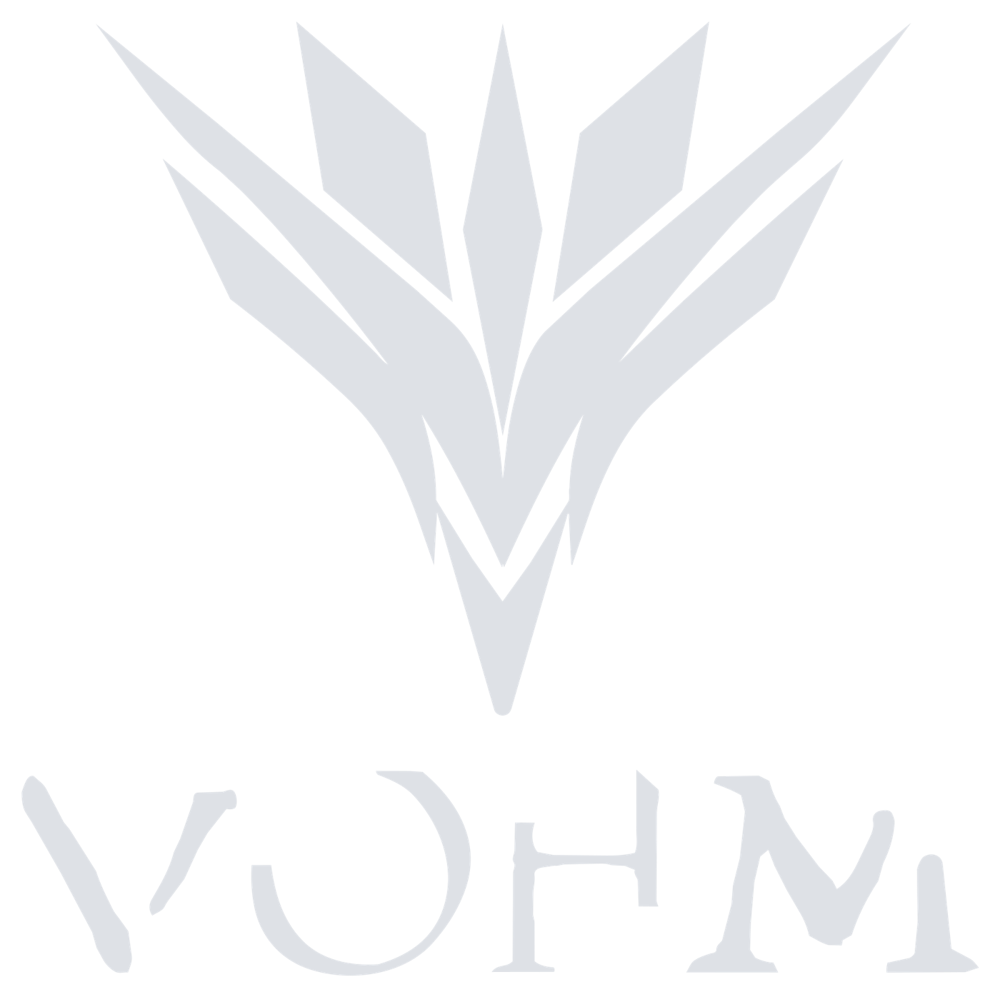

Tamaños mínimos
Logotipo completo: 30 mm (354.9 px). Versión compacta: 18 mm (212.5 px).

THE WEIGHT OF BEING
Proceso de creación de una identidad: joyería que traduce la intensidad del sonido en formas físicas.
Entrar al procesoVÖHM nace de una invención fonética: la onomatopeya del zumbido de un amplificador unida a la palabra “volumen”. Al pronunciarlo se siente una vibración en los labios, fuerza e intensidad antes que significado.
La diéresis sobre la O aporta un carácter industrial y distintivo. Es la pequeña marca que vuelve el nombre irrepetible.
La estética grunge y nu-metal guía toda la marca: crudeza, intensidad y una fuerte carga emocional. VÖHM diseña arquitecturas de exhibición que dan impacto visual a tu joyería.
Materializar la energía del sonido en estructuras físicas de alta calidad y conectar tu identidad musical con tu espacio cotidiano.
Ser el referente global del diseño grunge, con cada pieza de joyería descansando sobre una obra de arte.
Auténtico: la belleza de la imperfección. Preciso: ingeniería digital y acabado artesanal. Experimental: no encajar, destacar.
Me inspiré en púas de guitarra y piezas metálicas afiladas. Formas geométricas puntiagudas y simétricas transmiten agresividad y tensión, y juntas construyen la V inicial del nombre.
Después incorporé una gema en el centro: equilibra la composición y ancla la marca al mundo de la joyería.
Tonos oscuros y neutros que refuerzan el contraste y la energía del género. El negro aporta misterio, el rojo profundo carga emocional y el blanco hueso devuelve claridad sin perder sobriedad.
Combiné serifs clásicas, que evocan la joyería tradicional, con una serif intervenida con cortes irregulares: desgaste, rebeldía y crudeza.
Serif intervenida para el logotipo y los momentos de ruptura.
Serif clásica en mayúsculas para titulares y lema.
Texto corrido, sobrio y legible.
El logotipo se apoya en una retícula modular (x, 2x, 3x, 10x, 12x, 16x) que mantiene las proporciones entre isotipo y letras.
Logotipo completo: 30 mm (354.9 px). Versión compacta: 18 mm (212.5 px).
Positivo y negativo, con el lema THE WEIGHT OF BEING bajo el nombre.
Logotipo de lado, isotipo angosto o aplastado, letras sobre el isotipo y tipografía diminuta.
El grunge y el nu-metal hoy conviven con estilos de vida activos. Por eso la identidad se extiende a piezas de uso cotidiano, cada una con su técnica.
Forrada a mano con vinil adhesivo negro mate; logotipo en vinil blanco brillante cortado con plotter.
Impresión DTF: el diseño se imprime en película y se transfiere a la tela con calor y presión.
También en DTF, con acabado resistente, duradero y de alta definición.
PVC con corte y grabado láser, para detalles precisos y acabado profesional.
Caso de gestión de crisis: VÖHM lanzó una colección colaborativa inspirada en experiencias reales. Una participante se sintió expuesta y la marca fue acusada de usar el dolor como recurso creativo.
La marca no retira la colección ni abandona su identidad emocional: pasa de “usar historias personales” a traducir emociones universales como vacío, duelo, transformación, nostalgia, memoria y reconstrucción.
Comunica el nuevo posicionamiento.
“Some feelings should stay faceless”: la emoción inspira el diseño sin exponer historias personales.
Refuerza el mensaje en movimiento.